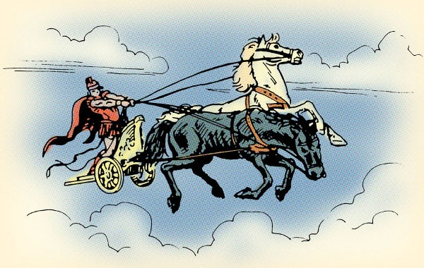

The Phaedrus, written by Plato, is a dialogue between Plato's protagonist, Socrates, and Phaedrus, an interlocutor in several dialogues. The Phaedrus was presumably composed around 370 BCE, about the same time as Plato's Republic and Symposium.[1] Although ostensibly about the topic of love, the discussion in the dialogue revolves around the art of rhetoric and how it should be practiced, and dwells on subjects as diverse as metempsychosis (the Greek tradition of reincarnation) and erotic love.
Click here to go back to the main page.